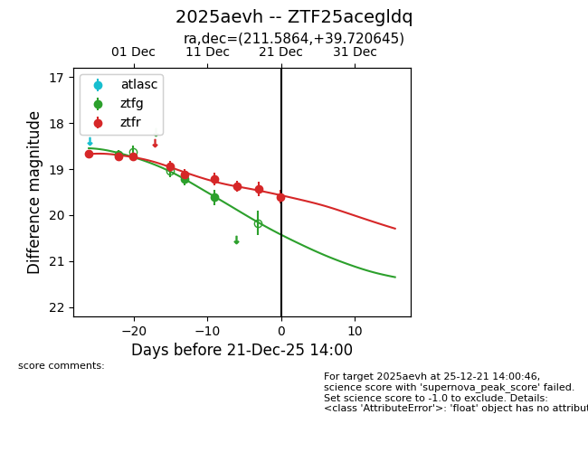
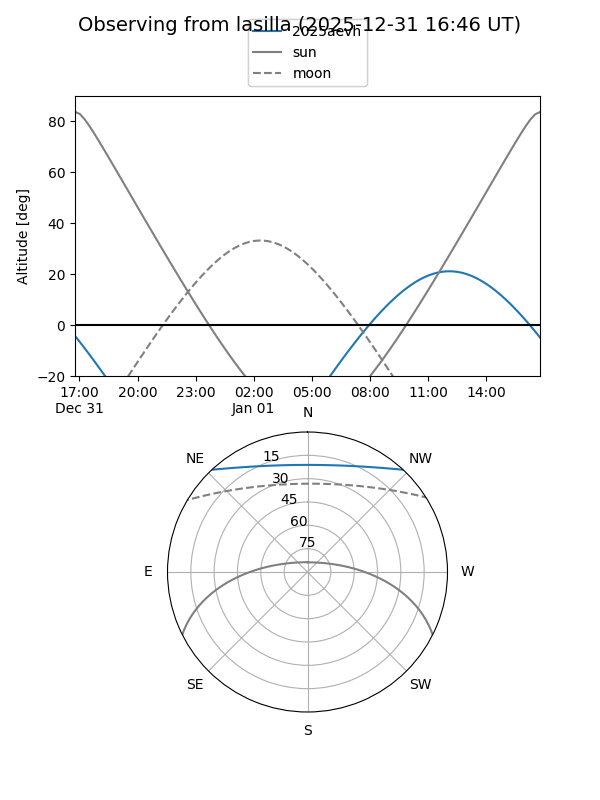
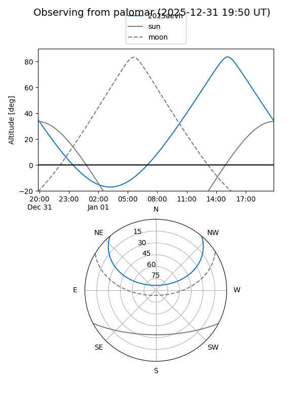
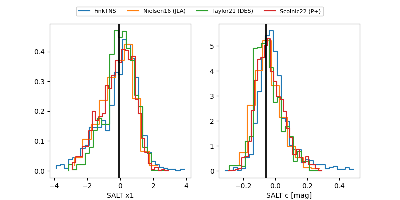

2025aevh
Target 2025aevh at 2025-12-31 18:00
Aliases and brokers:
FINK: link
Lasair: link
ALeRCE: link
TNS: link
YSE: link
alt names
ZTF25acegldq (ztf,fink_ztf)
2025aevh (tns,yse)
Coordinates:
equatorial (ra, dec) = 211.5864,+39.72064
equatorial (HMS+DMS) = 14:06:20.74,+39:43:14.32
galactic (l, b) = (76.7037,+70.00211)
Flags:
Photometry:
last ztfg=19.62, ztfr=19.60
3 ztfg, 9 ztfr detections
Lightcurve

Visibility


Additional plots
